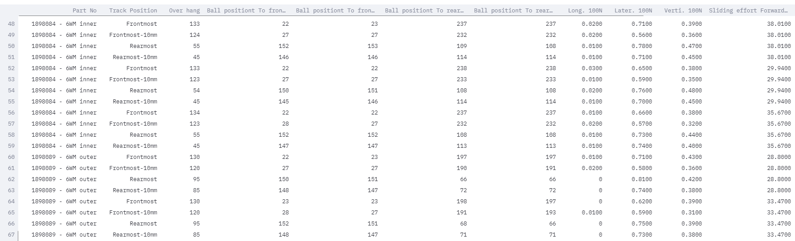
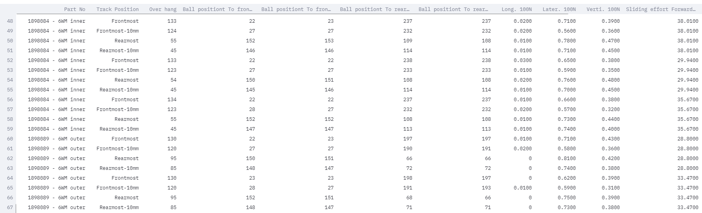
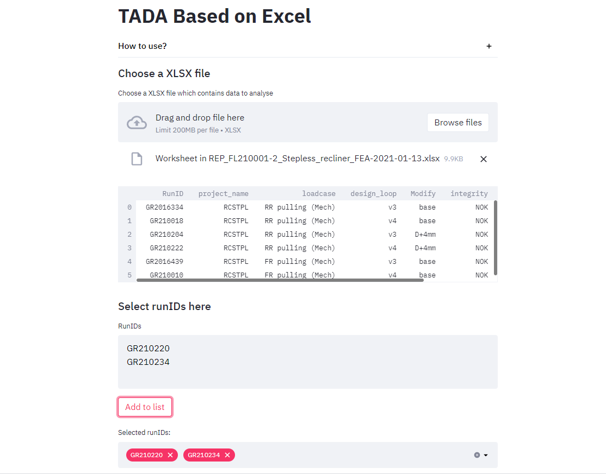

TADA Quick start¶
Double click the file « TADA_runner.bat » in the source directory, a web page will be opened.
{kind=link}
Click « Browse files » to select one or multiple txt files which contains RunIDs.

You may also want to add other RunIDs. You can do it by entering them in the text input below and then click « Add to list ».
All selected RunIDs will be presented at the bottom.
Click the button « Search » and wait for a while. During this time, the program searches all the RunID one by one from MIT reports online database. The search time depends on the total number of RunID and connection speed.

Then, you can select the design loops or different types of graph in the expander sections.

Tip
If multiple design loops are selected, the generated graphs will be in compare mode. The generated graph will compare results in different design loops instead of load case short name.
Click « Generate Graphs ». All generated graphs will be displayed in the section « Graphs ». A PDF file which contains all graphs will be generated at the same time.

You can see the standardized Excel table, by clicking the checkbox « View Excel table » in the sidebar. A table will be displayed on the interface.

See also
Demo video: Main Page - TADA
Tip
Sometimes, you just want to compare compare different RunIDs. To do this, you can switch the « Page » in the sidebar, and select « Compare RunIDs », then click « Generate Graphs ».

See also
Demo video: Compare RunIDs
Quick Data Analysis¶
If you want to do some data analysis, you can use the « Quick Data Analysis »:
First, switch the « Page » option to « Quick Data Analysis »

Then, select a XLSX file which contains the data to be analyzed.
 

{kind=link}
Finally, click « Generate profiling » to generate an interactive HTML report.
{kind=link}
For each column the following statistics - if relevant for the column type - are presented in an interactive HTML report:
Type inference: detect the types of columns in a dataframe.
Essentials: type, unique values, missing values
Quantile statistics like minimum value, Q1, median, Q3, maximum, range, interquartile range
Descriptive statistics like mean, mode, standard deviation, sum, median absolute deviation, coefficient of variation, kurtosis, skewness
Most frequent values
Histograms
Correlations highlighting of highly correlated variables, Spearman, Pearson and Kendall matrices
Missing values matrix, count, heatmap and dendrogram of missing values
Duplicate rows Lists the most occurring duplicate rows
Text analysis learn about categories (Uppercase, Space), scripts (Latin, Cyrillic) and blocks (ASCII) of text data
Results could be like this:


See also
Demo video: Quick data analysis
TADA Based on Excel¶
You can also update an existing Excel by adding other RunIDs. If you have already deleted the unnecessary columns in your Excel table, and you want to add a few other RunIDs to the existing table without creating new tables.
To do this, switch to « TADA Based on Excel » page in the sidebar.

Then, upload the existing Excel with desired columns. You can then see the Excel table on your screen.
{kind=link}
Now, enter a few RunIDs to the input box and click « Add to list ». Finally, click « Search ». The updated Excel will be generated and stored to the same path of other generated files.

See also
Demo video: Add RunID based on Excel